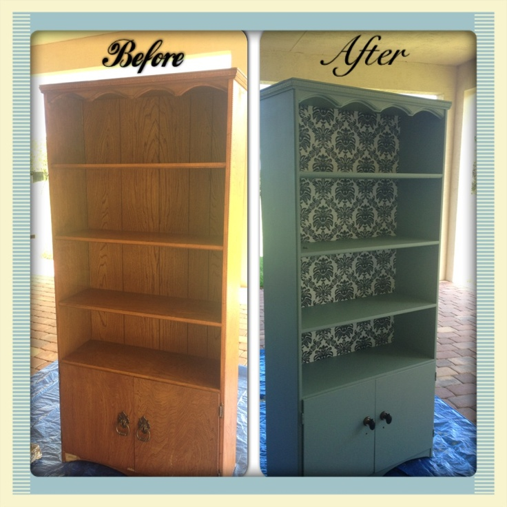
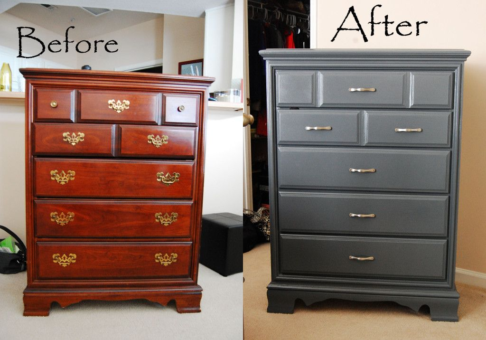
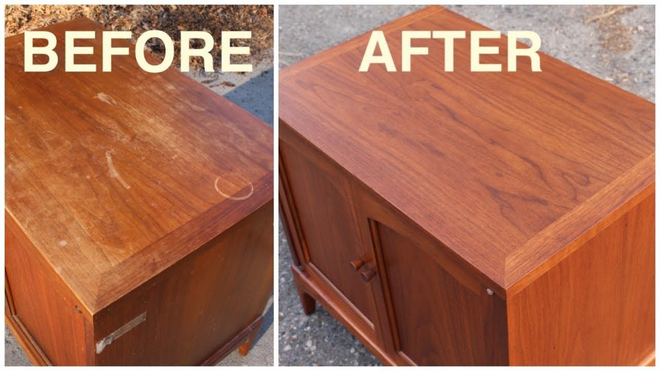
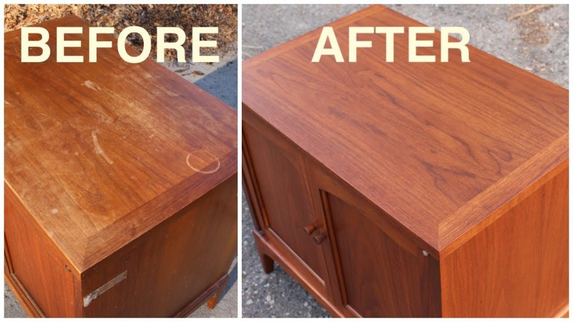

On this website, we will look at refinishing furniture. we will discuss projects that have been done and the process needed to be successful. We will discuss the need for the proper
selection of sandpaper and color palettes. As humans, we have a natural desire to be comfortable. This desire has led to many refurnishing projects that have been highly appreciated by others.
to properly appreciate the work being done we need to view the images of others' work. at the bottom of the page is a link to a how-to page that will have a video as well as images that will
help to select which product is best for your project.
Furniture is like wine as it gets older to become better, a solid wood piece of furniture has so many possibilities. As we look into the design portions of furniture we must be willing
to see the changes that need to be made. in some instances the changes need to be in hardware in others it needs to be reinforcing the piece and re-defining the character. Furniture pieces
that have been finished give the individual a sense of absolute pride. Speaking from experience the completion of a project allows the individual to have a sense of purpose and need.


 
